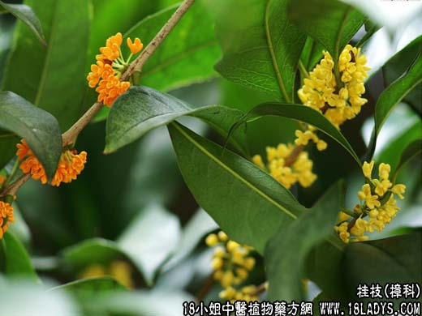

【中药概述】
桂枝为樟科乔木植物肉桂的嫩枝（通常于春季刈下）。辛、甘，温。归心、肺、膀胱经。
1．发汗解肌：用于风寒表证，风寒伤于肌表，而为身热头痛、恶寒恶风等证，无论有汗无汗，皆可应用。如（<伤寒论>桂枝汤）。
2．温通经脉：用于寒湿痹痛及血寒痛经、经闭等证，有温通经脉和温散肌表风寒的双重作用。如（<伤寒论>桂枝附子汤）（枳实薤白桂枝汤、桂枝茯苓丸、四逆汤）。
3．通阳化气：用于阴寒阻遏，水湿不化的痰饮喘咳及膀胱蓄水、小便不利等证，能温通阳气，以增强化湿行水作用。如（苓桂术甘汤、五苓散）。
【药效鉴别】
桂枝入血分，外行肌表，横走经脉肢节，长于发散肌表风寒而利关节、止痛；借其温通之性，又有活血通经之功。本品是一种作用广泛的药物，非解表而已。
【临证应用】
1.寒湿痹痛：关节筋骨或肌肉疼痛酸麻、局部微肿、遇寒更甚，缠绵难愈（类风湿性关节炎或肌肉风湿），常用大剂量之桂枝配附子，防风，秦艽，灵仙，防己等，使之微微汗出；
2.冻疮：用桂枝加当归汤（桂枝，赤芍，当归，甘草，生姜，红枣）水煎二次，和匀，分二次一日服完。
【应用与配伍】
1．用于风寒感冒。本品辛甘温煦，甘温通阳扶卫，故有助卫实表，发汗解肌，外散风寒之功。
如治风寒表实无汗者，常配麻黄同用，以开宣肺气，发散风寒，如麻黄汤；若治表虚有汗者，当与白芍同用，以调和营卫，发汗解肌，如桂枝汤。
2．用于寒凝血滞诸痛证。本品有温通经脉，散寒止痛之效。如胸阳不振，心脉瘀阻，胸痹心痛，常与枳实、薤白同用，如枳实薤白桂枝汤；若中焦虚寒，脘腹冷痛，每与白芍、饴糖同用，如小建中汤；若血寒瘀阻，经闭腹痛，多与当归、吴茱萸同用，如<温经汤>；若风寒湿痹，肩臂疼痛，可与附子同用，如桂枝附子汤。
3．用于痰饮、蓄水证。本品甘温，助阳化气，以行水湿痰饮之邪。如脾阳不运，痰饮眩悸者，常与茯苓、白术同用，如苓桂术甘汤，若膀胱气化不行，水肿小便不利者，每与猪苓、泽泻等同用，如五苓散。
4．用于心悸。本品辛甘性温，能温心阳，通血脉，止悸动。如心阳不振，不能宣通血脉，见心悸动、脉结代者，每与甘草、党参、麦冬同用，如灸甘草汤。此外，若阴寒内盛，引动下焦冲气，上凌心胸所致奔豚者，常重用本品，如桂枝加桂汤。
【药理作用】
桂枝煎剂能通过中枢及末梢扩张皮肤血管，有发汗解热作用，对金黄色葡萄球菌、白色葡萄球菌、伤寒杆菌及致病性皮肤真菌、流感亚洲京科68-1株等病毒均有抑制作用。
【化学成分】
含桂皮油，其主要成为为桂皮醛、桂皮酸及少量的乙酸桂皮脂。
【用量用法】
3——10g，水煎服。
【使用注意】
血热妄行及温热病忌用。本品辛温助热，容易伤阴动血，凡外感热病、阴虚火旺，均当忌用。孕妇及月经过多者慎用。